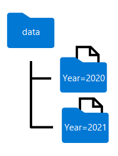

Analyze data with Spark#
By default, Azure Synapse Analytics uses PySpark in the Spark notebook. The notebook also supports languages such as Scale and SQL.
Exploring data#
The most common way to work with data in spark is using a Dataframe, provided as part of the Spark SQL library. These are also similar to those used in the Pandas library, but optimized to work in Spark’s distributed processing environment.
Loading data#
Assume the file products.csv is available at some location. Then use the following PySpark code to load the data with
column names defined by the schema product_schema:
%%pyspark # A 'magic' - Tells Spark that PySpark is the currently used language
from pyspark.sql.functions import *
from pyspark.sql.types import *
product_schema = StructType([
StructField("ProductID", IntegerType()),
StructField("ProductName", StringType()),
StructField("Category", StringType()),
StructField("ListPrice", FloatType())
])
df = spark.read.load(
"products.csv",
format="csv",
header=False,
schema=product_schema
)
display(df.limit(10))
If the data sheet contains column names as the header use header=True instead.
Conditional selection#
To select specific columns and conditional elements of a dataframe, you cna chain df.select and df.where:
bikes_df = df.select("ProductName", "ListPrice").where(
(df["Category"] == "Mountain Bikes") | (df["Category"] == "Road Bikes"))
Group by#
To group data, use groupBy:
counts_df = df.select("ProductID", "Category").groupBy("Category").count()
SQL expressions in Spark#
The Dataframe API is part of a Spark SQL library, letting data analysts use SQL expressions to query and manipulate
data.
To query data with PySpark, use spark.sql:
bikes_df = spark.sql("SELECT ProductID, ProductName, ListPrice \
FROM products \
WHERE Category IN ('Mountain Bikes', 'Road Bikes')")
display(bikes_df)
SQL magic in Spark notebook#
SQL queries can also be run using the %%sql magic:
%%sql
SELECT Category, COUNT(ProductID) AS ProductCount
FROM products
GROUP BY Category
ORDER BY Category
Transform data#
Typical transformations include:
Filtering rows and columns
Renaming columns
Creating new columns, often derived from existing ones
Replacing null or other values
In the following example, the split function is used, before drop’ing an original column:
from pyspark.sql.functions import split, col
df = spark.read.csv('/orders/*.csv', header=True, inferSchema=True)
df_split = df.withColumn("FirstName", split(col("CustomerName"), " ")
.getItem(0)).withColumn("LastName", split(col("CustomerName"), " ").getItem(1))
df_dropped = df_split.drop("CustomerName")
Storing (transformed) data#
To store data, here into a parquet file, do:
df_dropped.write.mode("overwrite").parquet("/data/orders.parquet")
Partition data#
Partitioning is an optimization technique – enabling Spark to maximize performance across nodes:
df = spark.read.csv("data.csv", header=True)
dated_df = df.withColumn("Year", year(col("OrderDate")))
# Partition by year
dated_df.write.partitionBy("Year").mode("overwrite").parquet("/data")
This results in the following folder name partitioning:

Filter Parquet files#
Data can be pulled from any folder within heirarchical folders:
orders_2020 = spark.read.parquet('(/partititoned_data/Year=2020')